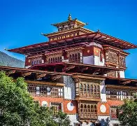

Bhutanese culture is deeply rooted in Buddhism, tradition, and community values, characterized by unique festivals, traditional dress, architecture, arts, and a strong commitment to cultural preservation and Gross National Happiness.
In Bhutan, traditional clothing is a big part of daily life. Men wear the “gho,” a knee-length robe wrapped around the body and tied at the waist with a belt called a “kera.” This attire often includes a white scarf known as a “kabney,” which indicates the wearer’s rank or status.
Women wear the “kira,” a long dress that reaches the ankles and is paired with a blouse called a “wonju” and a short jacket known as a “toego.” These clothes are often made from bright, hand-woven fabrics with intricate designs.
Traditional attire is a source of national pride and is required in schools, government offices, and special occasions. The vibrant colors and patterns reflect the country’s artistic heritage and promote a sense of unity and identity among Bhutanese people.
Bhutanese citizens must wear these traditional outfits when visiting government offices, attending formal events, participating in religious ceremonies, and during certain festivals to preserve Bhutan's heritage and showcase cultural pride.
Bhutan is famous for its colorful festivals, called “Tsechus.” These annual events are held in monasteries and fortresses (dzongs) nationwide.
Tsechus are a big part of Bhutanese culture and feature masked dances, music, and rituals that celebrate important events in the life of Guru Rinpoche,
the founder of Tibetan Buddhism. The Paro and Thimphu Tsechus are especially popular with both locals and tourists.
During these festivals, participants wear elaborate costumes and masks and perform dances that depict stories of good triumphing over evil.
These celebrations are not only religious but also social events that bring communities together. They allow people to dress in their finest traditional clothing,
enjoy local food, and engage in communal prayers and offerings.
Bhutanese culture is closely tied to its traditional cuisine, which features spicy, flavorful dishes centered around local ingredients like red rice, chili, and cheese.
Traditional Cuisine
Bhutanese food reflects the country’s mountainous terrain and Buddhist cultural values. Chili peppers are considered a staple, often used both as a spice and a vegetable in various dishes. The national dish, Ema Datshi, is a spicy stew made from chili peppers cooked with local cheese, usually from yak or cow milk. This dish embodies the Bhutanese preference for bold, spicy flavors and the use of local dairy products.
Other popular dishes include:
Phaksha Paa: slices of pork cooked with spicy chilies and radishes.
Jasha Maru: a spicy chicken stew often served with red rice.
Red rice: a staple grain in Bhutan, slightly nutty and usually served alongside most meals.
Momo: Bhutanese-style dumplings filled with meat or vegetables, often accompanied by spicy sauces.
Shakam Paa: dried beef cooked with chili and cheese, reflecting traditional preservation techniques.
Bhutan’s architecture is a living reflection of its cultural values, spiritual beliefs, and harmonious relationship with nature. From majestic dzongs to simple rural homes, Bhutanese building traditions balance functionality with artistry, rooted in centuries-old techniques and a deep respect for environment and community. For travellers and enthusiasts alike, exploring Bhutan’s architecture offers insight into a society where structures do more than shelter—they embody identity, history, and spirituality.
Bhutanese architecture is rich in symbolic motifs drawn from Buddhist teachings and local folklore. The use of the eight auspicious symbols—such as the lotus, conch shell, and endless knot—decorates beams, windows, and doorways, offering protection and blessing. Colour plays a significant role: red, gold, white, and black feature prominently in woodwork and murals, conveying spiritual meanings and cultural identity. The balance of decorative detail with structural simplicity exemplifies Bhutan’s aesthetic ethos.
